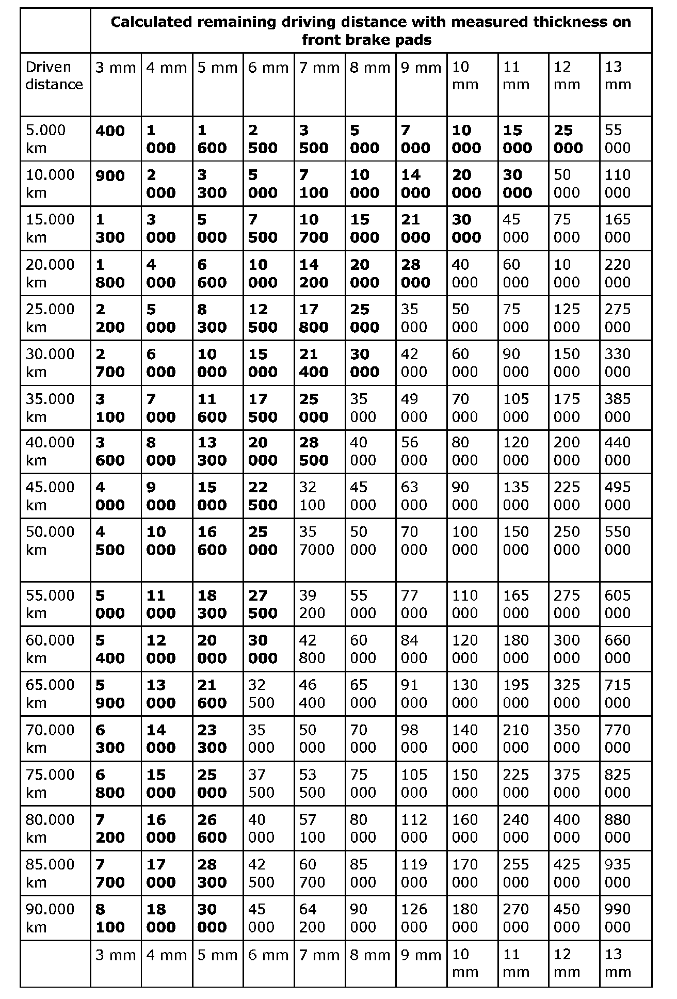
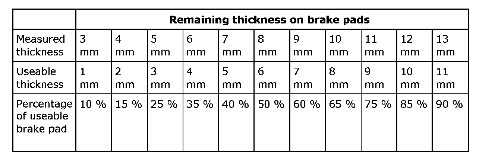
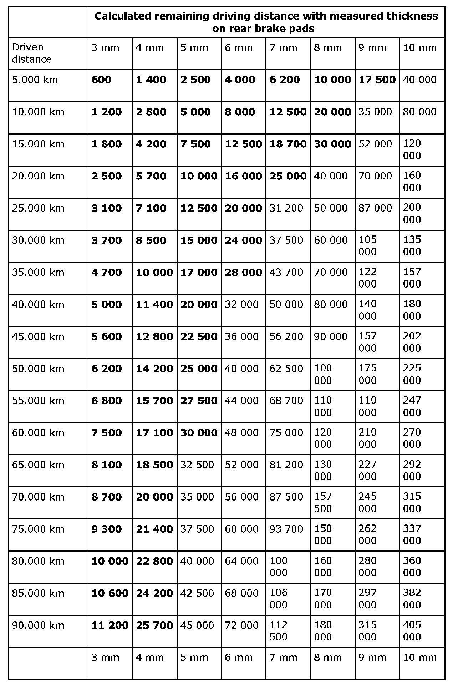
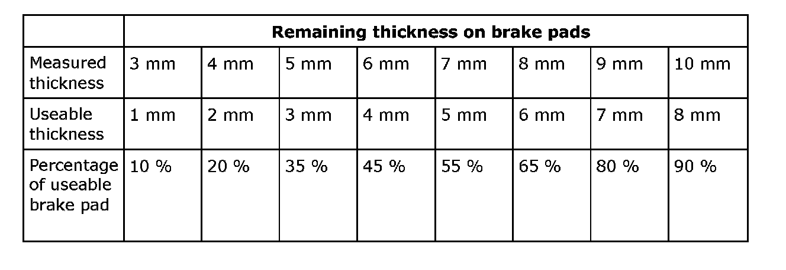

Brake Pad Wear
Brake pad wearThe brake pads should not be used further, and at least 2 mm must remain when they are replaced. The material closest to the carrier plate is used to secure the brake pad to the carrier plate.
Useable brake pad remaining thickness is reduced by 2mm.
Front brakes
Calculation of remaining driving distance in km
Measure the thickness of the brake pads.
Find out the driving distance since the last change.
Read off the calculated remaining driving distance at the point of intersection for driven distance and brake pads thickness in the table.
Measure the thickness minus 2 mm multiplied by driven distance since the previous change. This value is divided by the original measurement (14 mm) minus the measurement in mm.
Example: The thickness is 7 mm and distance driven since last change is 25,000 km. Giving approx. 17,800 km remaining driving distance. Replacement is recommended at values below 30,000 km, in bold in the table.
Values in the table are approximate calculations assuming that driving conditions are met during the entire service life of the brake pads.

Calculation of remaining brake pad in percentage terms (%)
Reduce the measured remaining thickness by 2 mm and divide by 12 mm. Multiply the value by 100.
The following table displays the calculations.

Rear brakes
Calculation of remaining driving distance in km
Measure the thickness of the brake pads.
Find out the driving distance since the last change.
Read off the calculated remaining driving distance at the point of intersection for driven distance and brake pads thickness in the table.
Measure the thickness minus 2 mm multiplied by driven distance since the previous change. This value is divided by the wear 14 minus the measurement.
Example: The thickness is 7 mm and driven distance since last change is 25,000 km. Giving approx. 17,800 km remaining driving distance. Replacement is recommended at values below 30,000 km, in bold in the table.
Values in the table are approximate calculations assuming that driving conditions are met during the entire service life of the brake pads.

Calculation of remaining brake pad in percentage terms (%)
Reduce the measured remaining thickness by 2 mm and divide by 11 mm. Multiply the value by 100.
The table displays the calculations.
